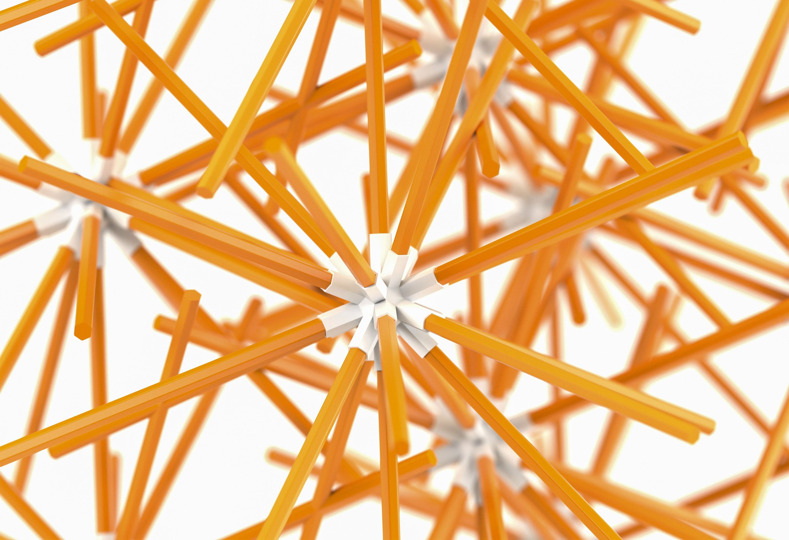
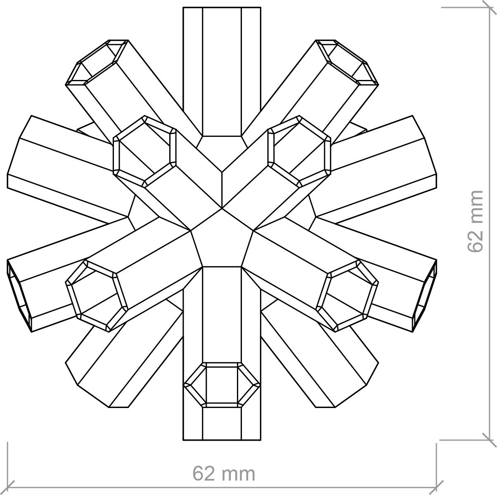
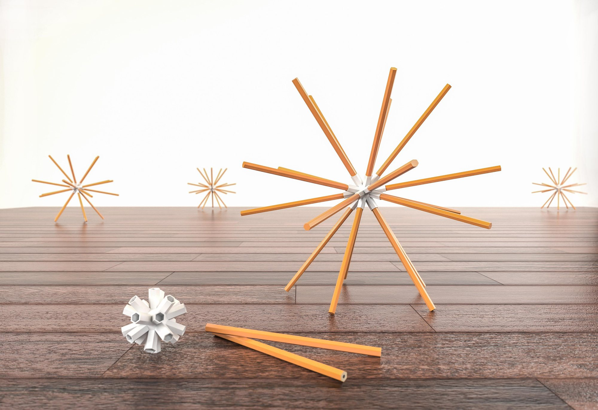
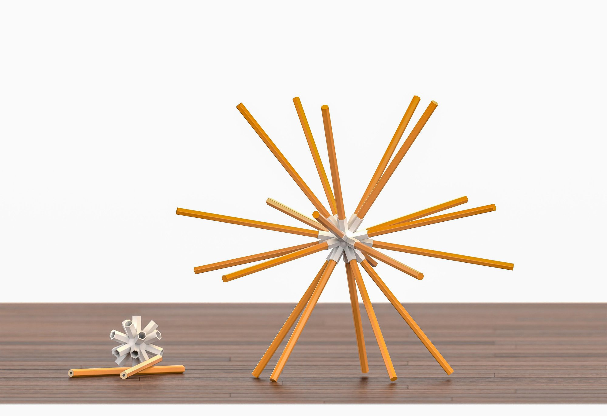
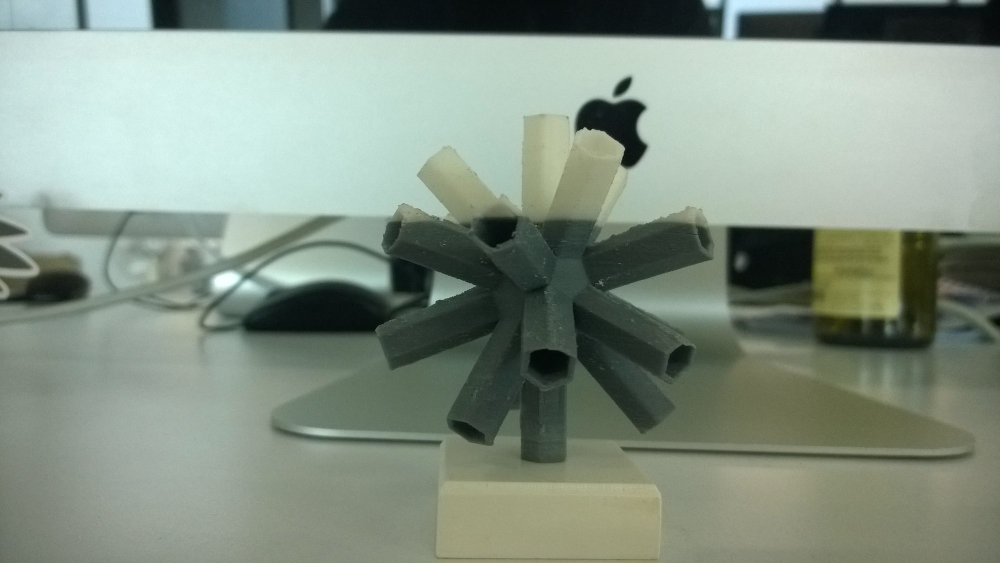
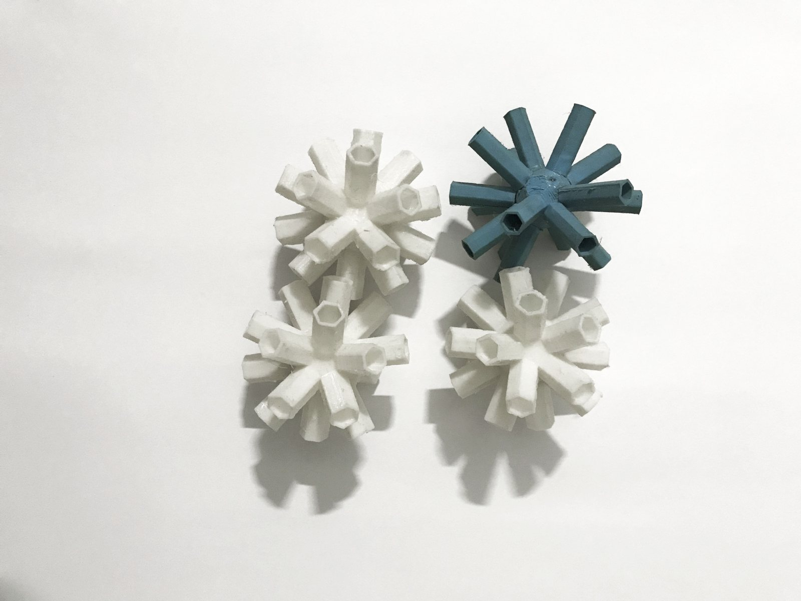
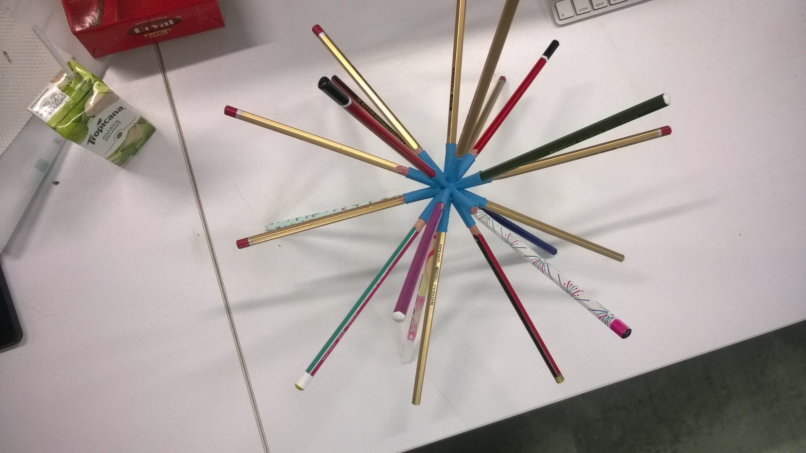
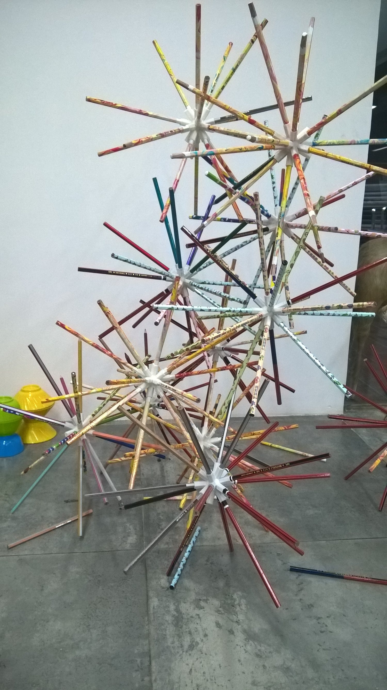

Hindustan Pencils
How do we make pencils fun in a digital world?

About
Hindustan Pencils is a ubiquitous stationery brand in India; every child has used their distinctive red-and-black hexagonal pencils at some point. Facing competition from newer, bolder competitors, the brand was looking to refresh its identity and find new ways to engage customers, and approached FITCH Mumbai.
As the Industrial Designer, I designed a modular pencil holder that could work as a desk toy, a collectible, or the building block of a larger shop display or installation, all built around the pencil's own hexagonal form.
Design Process
In order to build on the unique hexagonal form of the pencil, I designed a structure based on a truncated icosahedron (a soccer ball shape) with extrusions sized precisely to hold the pencils. I started by taking detailed measurements of the pencils themselves, accounting for variances in the manufacturing process, before modelling the shape, and testing the right size to “hold” the pencils.
Multiple iterations were 3D printed in different materials, ABS for rigidity and Fila-Flex for a softer finish, before the dimensions were finalized and a run of units printed in PLA.







At the final client presentation, the pencil holders were handed out along with a set of pencils. The clients assembled a tree together. It brought out their inner children, which was the goal of this project.